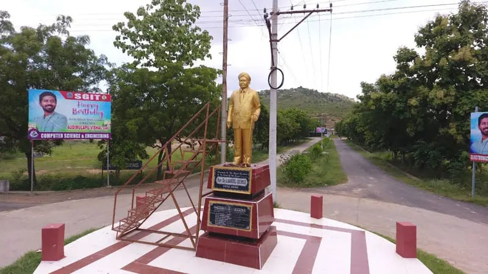

A legacy of 28+ years of quality technical education in the heart of Prakasam District-where innovation meets tradition ,and students become world-class engineers
Our story

Dr. Samuel George Institute of Engineering and Technology (SGIT) was founded in 1997 by Dr. Audimulapu Samuel George — an educationalist, humanist, and visionary who taught in various American Universities. His deep desire to bring world-class technical education to the backward regions of Andhra Pradesh led to the birth of SGIT in Markapur, Prakasam District. Spread across 56 acres on the Markapur-Hyderabad Highway, SGIT provides a rich academic environment with state-of-the-art labs, a world-class library, modern hostels, and excellent sports facilities. The institute is affiliated to JNTU Kakinada and approved by AICTE. With a vision to create discipline, hard work, and the value of time — SGIT has produced thousands of engineers placed across India and the world.
Choose from undergraduate, postgraduate, and diploma programmes across engineering and management disciplines
Master programming, data structures, algorithm, AI, and software engineeringwith strong industry exposure
180 seatsStudy VLSI, embedded systems, telecommunications, and signal processing with hands-on lab training.
B.tech-4 years 60 seatsCutting edge curriculum in machine learing, deep learning computer vision, and intelligent systems
B.Tech-4 years 60 seatsCovers thermodynamics, manufacturing design, CAD/CAM and production engineering
.Structural Design, construction management, environment engineering , and transportation planning
Advanced postgraduation specializations in multiple engineering disciplines for aspiring reseachers.
Business management covering marketing, finance, HP, and strategic leadership for tomorrow's leaders
Three-years diploma programmes for students seeking a practical, hands-on engineering foundation.
folow this steps:
For B.Tech UG admissions, register and appear in the AP EAMCET/EAPCET. Diploma admissions based on 10th marks. M.Tech requires GATE or AP PGECET.
Attempt the AP EAMCET exam and await your rank. For MBA/MCA: AP ICET. All exams conducted by the Andhra Pradesh state government.
After results, attend AP state counselling or direct allotment process as per your rank, category, and reservation status.
Submit hall ticket, mark sheets, caste certificate, Aadhaar, and pay the admission fee to confirm your seat at SGIT.
UG ENTRANCE AP EMCET OR POLYCET
PG ENTRANCE GATE / AP PGECET
MBA / MCA AP ICET
DIPLOMA BASIS 10Th Std.Marks
UNIVERSITY JNTU Kakinada
APPROVAL AICTE Approved
NEAREST BUS STOP Markapuram-4.5Km
NEAREST RAILWAY Markapuram Road-7.9Km
PIN CODE 523320
A 56-acre campus fully equipped to support your academic journey and personal growth.
📚 Premium LibraryOne of the best and largest libraries in the region, stocked with thousands of titles, journals, and digital resources.
🏠 Hostel AccommodationWell-equipped separate hostels for boys and girls with round-the-clock security and modern amenities.
🏋️ Indoor Sports StadiumModern indoor stadium with world-class sports equipment supporting diverse athletic and sports programs.
🖥️ IT InfrastructureHigh-speed internet, modern computer labs, and state-of-the-art technology infrastructure across campus.
🔬 Advanced LaboratoriesFully developed departmental labs for CSE, ECE, Mechanical, Civil, and AI & ML engineering streams.
🍽️ Canteen & CafeteriaHygienic and affordable food courts serving a wide variety of meals, snacks, and beverages daily.
🚌 TransportationCampus bus service connecting Markapur town and surrounding areas to the college conveniently.
🏥 Medical CenterOn-campus medical facility to ensure the health and well-being of all students and staff members.
SGIT's dedicated placement cell provides robust career opportunities, connecting students with India's leading companies.
Top Recruiter Partner
Strategic Industry Tie-Up
Campus Placement Partner
Our Recruiting Partners TCSDr. Samuel George Institute of Engineering & Technology, George Town, Darimadugu Village, Markapur Mandal, Prakasam District, Andhra Pradesh – 523320
Visit the official website or fill the form to get details on the latest fee structure, seat availability, and scholarship opportunities.
| DIPLOMA | B>TECH |
|---|---|
| CSE | CSE |